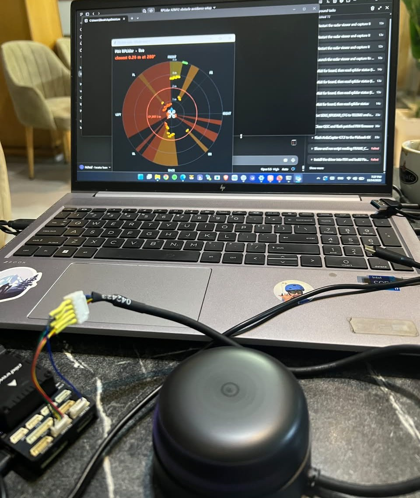

Why PX4 needed new code
PX4's Collision Prevention reads a uORB topic called obstacle_distance: 72 sectors of 5 degrees in the vehicle frame. Without a companion computer, nothing publishes it from a 360 degree serial lidar. The new driver fills exactly that gap.
How the driver works
It talks the RPLidar legacy scan protocol: stop, read health, read device info, start scanning, then decode 5-byte samples. It keeps the closest return in each 5 degree sector and publishes one message per revolution, projected onto the horizontal plane using the vehicle attitude. Sectors swept with no return are reported as free, sectors never sampled as unknown. Parameters handle the port, an upside-down mount and a yaw offset.
Test before touching hardware
A host test bench compiles the real driver against stand-ins for PX4 and runs it against a simulated lidar: normal scanning, motor off, corrupted bytes, a health error and reset, upside down, yaw offset, no sensor, split serial reads, 30 degree pitch and a slow 5 Hz scan. The corrupted-bytes case exposed a real bug (false start-of-revolution flags), fixed with a 40 ms guard.
The firmware did not fit
The first PX4 build for the 6X failed on flash size, 20.9 KB over, although the driver itself is only 4.4 KB. The standard target was already close to full with that compiler. PX4's official multicopter variant drops fixed-wing and VTOL code and fits at 97 percent, which is the right variant for a quadcopter anyway.
Simulation on hardware, checked and set aside
I also built ArduPilot's simulation-on-hardware firmware for the 6X. It works as a bench simulator, but its proximity library is compiled out, so it cannot show the lidar. Avoidance will be tested in software-in-the-loop simulation instead.
Project record
Scope: PX4 driver and patches, ground-station displays and bench integration on two flight controllers. Collision Prevention in flight has not been tested yet.